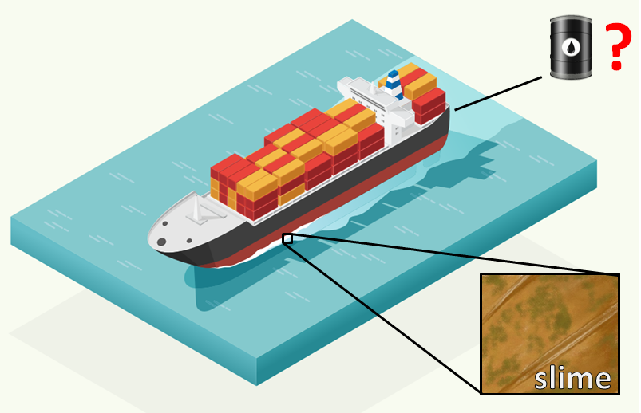

How To
Estimate the Added Fuel Consumption due to Hull Fouling Based Only on Observed Fouling QUICKLY and EASILY
Hello!
If you reading this, you are probably working in the shipping industry and you want a quick and easy methodology that will provide a rough estimation of the effect of hull fouling in ship’s power and fuel consumption.
Unfortunately, this requires expensive sensors, detailed measurements, continuous monitoring of every available parameter, sophisticated software and time-consuming data analysis.
Not necessarily!
Of course all the above are useful and can provide accurate results but non of the above is needed in order to have a rough estimation instantly, without spending hours of handling data.
What if you could have a rough estimate of the effect of hull fouling on your vessel’s fuel consumption just by looking at a photo from an underwater inspection? ( NO measurements, NO sensors, NO noon reports, NO data analysis)
I present you the book:
“SHIP PERFORMANCE ASSESSMENT BASED ON OBSERVED FOULING"
The step-by-step guide for estimating the effect of hull fouling in ship performance with nothing but just a few underwater photos!
It is a simple, compact technical manual (only a few pages - can be read within 1 hour) that will translate an underwater observation of a hull to a rough estimate of additional power and fuel consumption in less than 1 minute by utilizing an extensive library of diagrams for a wide range of vessels of different types and sizes (450+ diagrams for most ship types and sizes are included in the book), that allow instant assessment of the observed fouling and its effect in the performance of the ship.

"How is this possible?"
First, let me introduce myself:
My name is Timoleon Plessas and I am the founder of Sealion Engineering. I have studied Naval Architecture and Marine Engineering at the National Technical University of Athens and I hold a PhD in the field of “Ship Design Optimization”. I have participated with the National Technical University of Athens in EU-funded projects where I developed models and tools for simulation and optimization of various systems of merchant ships with numerous peer-reviewed papers published in journals and conferences. I have also worked in the energy department of a large Greek shipping company with 70+ ships of various types and sizes. There, I participated in the monitoring of vessel’s performance by developing sophisticated tools for handling high-frequency data and arranging underwater hull inspections and hull cleanings.
This experience gave me a better understanding on how the observed fouling is linked to the actual performance of the vessel since the effect was measured by the installed sensors.
In short, the main idea of this book is simple: The effect of fouling in the performance of a ship can be adequately quantified based on the observed condition on the hull. Although it can’t be quantified down to the last digit, its effect in general can be put within an expected range in terms of power increase just by observing it.
So, I studied the available scientific research on the subject and used the most appropriate methods, based on my experience, in order to transform my qualitative, empirical knowledge to a formal methodology and create a simple and quick solution, that will help anyone to skip the years of experience needed in order to have a ‘feeling’ on how the observed fouling affects the performance of a ship and be able to feel confident about what to expect in terms of ship performance based only on observation.
This methodology can be applied to ships of all types and sizes. 450+ diagrams that predict the effect of fouling have been generated and included in the book in order to make it a stand alone tool for monitoring the performance of a ship when no other information is available other than a few underwater photos.
Testimonials
This simple method has helped Captains, Chief Engineers, Vessel Operators and Superintended Engineers to have a rough estimation of the effect of fouling when no other information is available other than photos from an underwater hull inspection.

I never could have imagined that my family photos would look THIS good, especially taken from my phone! Incredible. I can't stop looking at these gorgeous pictures of my family. And I took them! So awesome.
Tanya Williams
Seattle, WA

My husband literally thought I hired a professional photographer to go to a playdate! LOL! Turns out, I just have a new secret weapon. And it's right on my phone whenever I need it. Thanks Jill!! :)
Brittany Moore
Miami, FL

iPhone Photo Secrets is absolutely incredible, from start to finish. The most valuable skill I have ever learned, hands down. My friends keep asking me how I do it. And if I'm honest for a second....that's my favorite part!
Tucker Carpenter
Toronto, CA
After reading this book you will be able to:
Identify the 5 main categories of fouling
Estimate the expected power increase due to observed fouling
Estimate the expected additional fuel consumption due to fouling
Predict the expected effect of fouling after X months
Decide whether to proceed with hull cleaning
Applicable to most of ship types and sizes:
Tankers (2,000 to 330,000 t DWT)
Bulk Carriers (1,000 to 330,000 t DWT)
General Cargo Ships (2,000 to 45,000 t DWT)
OBO Carriers (60,000 to 160,000 t DWT)
Containerships (400 to 12,000 TEU)
LNG Carriers (125,000 to 260,000 m3 Capacity)
RORO Ships (500 to 5,000 Lanemeters)
RORO/Passenger Ships (70 to 200 m Length)
Chemical Carriers (5,000 to 50,000 t DWT)
Reefer Ships (2,500 to 18,000 m3 Capacity)
Here is what you get:
A hardcopy of the book "Ship Performance Assessment Based on Observed Fouling" ($97 Value)
Inside you get:
Clear understanding of the different types of fouling that affect the performance of a ship and how to categorize them in 5 easily identifiable categories.
A quick methodology to assess observed hull fouling which can be applied to different types of vessels, regardless of ship type, type of engine or type of fuel.
A Complete library of Fouling diagrams (450+ diagrams) for all the major ship types and sizes (Tankers, Bulks, LNGs etc.) for calculating the effect of fouling.
Clear instructions on how to handle complex cases, including combinations of different types of fouling.
Case study to familiarize yourself with the application of the methodology.
SPECIAL
Get the FREE Tool that Allows the Estimation of the Effect of Fouling in Ship Performance within 1 Minute!
The aim of this book is to have a quick estimation of the effect of fouling within seconds after receiving underwater photos of a hull. This simple tool delivers this promise!
The "1-MINUTE HULL FOULING ASSESSMENT SPREADSHEET” (FREE!)
The calculations that are presented in the book are condensed into one simple spreadsheet that calculates all the necessary parameters instantly with the minimum possible input!
The Offer
Hardcopy of the book "Ship Performance Assessment Based on Observed Fouling" ($97 Value)
The "1-MINUTE HULL FOULING ASSESSMENT SPREADSHEET” (FREE!)
A TOTAL VALUE OF 97$